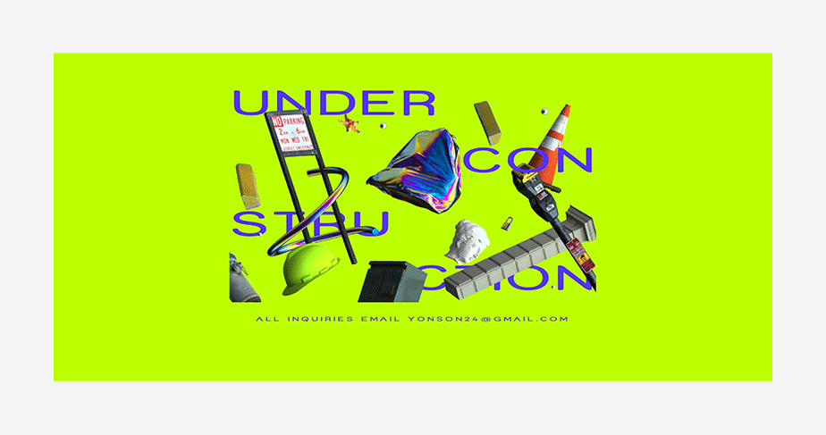
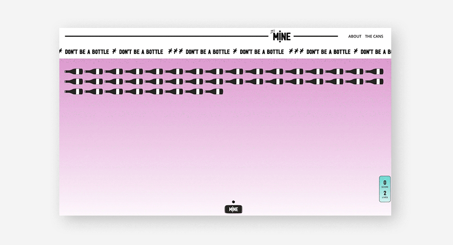
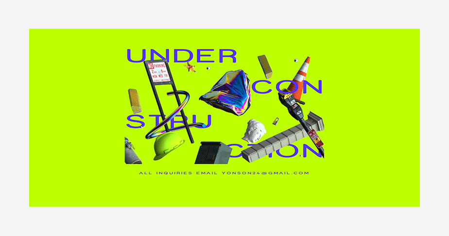
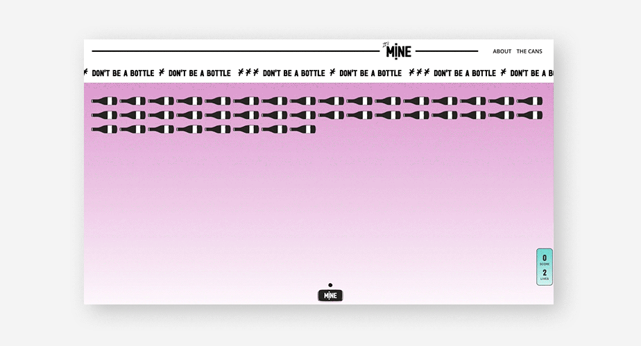

WEB DESIGN
TREND
2023
2023 Web Design Trend
ARROW
BADGE-STYLE
WIDE-FONT
3D GRAPHIC-ART
2023 TREND STORY
화살표는 언제부터인가 자연스럽게 그래픽 디자인 트렌드로 숨어들었습니다. 요즘에는 웹사이트, 그래픽 아트, 포스터, 포트폴리오에 이르기까지 화살표를 사용하지 않은 디자인 자료가 없을 지경입니다. 언제부터 사용되기 시작되었는지, 어떤 의미로써 사용되고 있는지는 알 수 없지만, 화살 표의 방향성에 대한 은유적 제시와 화살표의 직선 형태에서 느껴지는 올곧은 이미지가 컨텐츠 내에 이질감없이 스며드는 것 같습니다. 개인적으로 는 컨텐츠 내에 화살표 그래픽과 연결지율 수 있을 만한 내용이 있을 때만 사용하는 것을 선호합니다. 혹시 지금까지 눈치 채지 못하셨던 분이 계시 다면 이제부터라도 그래픽이 첨가된 어떤 작업물을 보실 때 화살표를 찾아보세요! 생각보다 많은 곳에서 확인하실 수 있으실 겁니다.
뱃지 스타일 디자인은 요즘처럼 라운드를 많이 사용하는 것이 트렌드인 시기에 적절한 디자인 트렌드라고 볼 수 있습니다. 짧고 간단한 단어와 키 워드로 작업물율 설명하기에도 좋은 스타일이며, 기존에도 뱃지 스타일은 U 디자인 요소로 사용되어 왔던 스타일이기에 그래픽 요소로 사용할 때 에도 위화감없이 어우러집니다. 이제 키워드를 노출할 때 '#'을 사용하는 것보다 뱃지 스타일을 사용하는 방식이 훨씬 더 보편화 되었습니다. 둥그 런 라운드 효과와 텍스트 요소의 넓은 간격으로 시각적으로 보기에도 편안한 스타일이기 때문에 오랫동안 사랑받을 것 같습니다.
와이드 폰트는 매년 트렌드로 떠오르고 있는 스타일 중 하나입니다. 그래픽보다는 타이포그래피라고 볼 수도 있겠지만 최근 사용되고 있는 스타일 은 크기가 매우 크고 두꺼운 폰트로 구성되어, 문자를 읽고 전달하고자하는 내용을 설명하는 것에서 벗어나 컨텐츠의 빈공간을 메우고 꾸며주는 요소로써 더 많이 사용되고 있기 때문에 이제 와이드 폰트는 더이상 타이포그래피로 보기 어렵다고 생각합니다. 와이드 폰트는 크기 조절이 가장 중요한데 너무 작게 사용했을 경우, 의도한 느낌을 전달하기 어려울 수 있고 또, 너무 크게 사용할 경우에는 사용자에게 부담스러운 시각적 정보 전 달이 될 수 있기 때문에 주의해야 합니다. (아무래도 타이포를 사용하기 때문에 정보를 전달하려는 목적이 전혀 없다고 할 수도 없기 때문입니다.) 사이트나 포트폴리오, 포스터 등에 사용했을 때의 압도적인 첫인상 덕에 분야에 국한되지 않고 사용되는 것 같습니다.
3D 그래픽의 경우, 토스의 브랜드 스타일로 너무 깊게 자리매김해버렸기 때문에 자칫 잘못 사용했다가는 토스의 디자인을 따라한 것처럼 보이거 나 토스를 레퍼런스 삼아 작업했다는 느낌이 다분히 드러날 수 있기 때문에 조심스럽습니다. 3D 그래픽도 더이상 트렌드라고 말하기 힘들만큼 보 편화되어 버렸지만 질감이 추가된다면 이야기는 달라집니다. 최근 들어서는 3D 그래픽에서 그치는 것이 아니라 다양한 질감 표현을 통해 각 브랜 드의 특징과 개성을 살리는 디자인이 늘고 있습니다. 오래 지속되는 트렌드일 수록 각 브랜드 개성을 어떻게 표현하고 다른 브랜드와 차별점을 드 러내며 트렌드를 표현할 수 있을지가 중요한 포인트가 되는 것 같습니다.
+ 2023 Trend gallery

 


